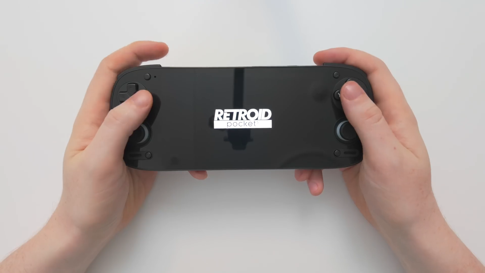
So you just got your Retroid Pocket 5 — congratulations, the wait is over. Open the box, take it out, and let's set it up together. This is a basic setup guide aimed at emulation beginners: by the end you'll be through the first-boot menu, you'll have the handful of apps I recommend installed, and you'll have every emulator from PlayStation 1 up to Nintendo Switch configured and ready to play.
One quick tip before we start: pop your microSD card in before you begin the process. It just makes everything easier down the line. I'd also suggest getting all of your games onto that external SD card in a single folder called ROMs — we'll be pointing every emulator at it, so having everything in one place keeps things simple.
I can't help with where to get game or BIOS files, so please don't ask in the comments — but everything else, I've got you covered.
First Boot & the Setup Menu
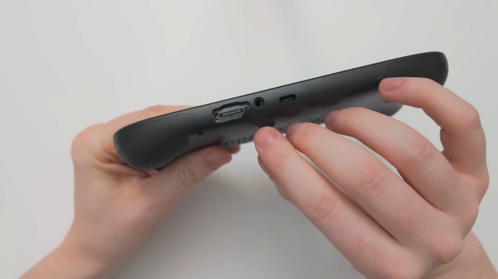
Turn it on and you'll see the Retroid Pocket 5 logo, then a very simple setup menu. You can move through it with the Next button on screen, or just push R1 (the bumper — it's actually labelled R1 on the button itself).
First, pick your language. Before you go any further, you might see a red message at the top saying your joystick is not calibrated. If you have that, tap the message and it'll take you into the calibration tool. Push down each analog stick and the trigger, and you'll see the bar move as you do — run through all the buttons it asks for, then push B to go back. (It's worth doing this properly now; it saves headaches later.)
Wi-Fi, Time Zone & Google
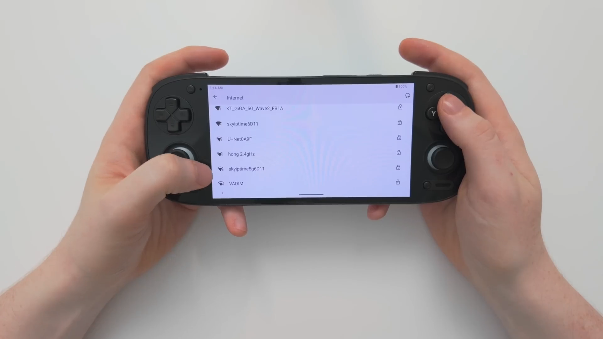
Next, connect to the internet. Open the WLAN settings, toggle Wi-Fi on, choose your network and enter your password. Once it says the device is connected, push B to go back and hit Next.
Now your time zone. It's set to New York by default, so open the time zone settings, search for where you actually are, choose your country, and it'll set the correct zone for you. Double-check it matches your region before moving on.
Then you'll be asked about Google Play services. Some people prefer not to hand their information to Google, and that's completely your choice — just uncheck the box if you'd rather skip it. Personally I do like using Google Play services, so I leave it checked. Either way, hit Next.
Pre-Installed Apps & Launcher
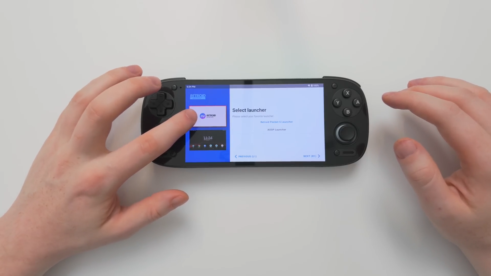
Now you can choose which apps to pre-install — there are up to 28 of them. You'll find the Dolphin emulator for GameCube and Wii, DuckStation for PlayStation 1, M64Plus for N64, plus useful extras like Moonlight for streaming games from your PC and MiXplorer (a file manager). Pick whatever you want; because I'm reviewing this unit I'm going to install all of them so I can walk you through everything. Don't stress about missing something here — you can always grab anything later from the Play Store or online.
Once they're installed (it only takes a minute), you'll choose your launcher: the custom Retroid launcher, or the more generic AOSP launcher. I'm personally not the biggest fan of the Retroid launcher, so I go with AOSP — and again, you can change this any time later. Hit the Complete/Start button and you're into your device. First setup done — congratulations!
Two Apps to Install First
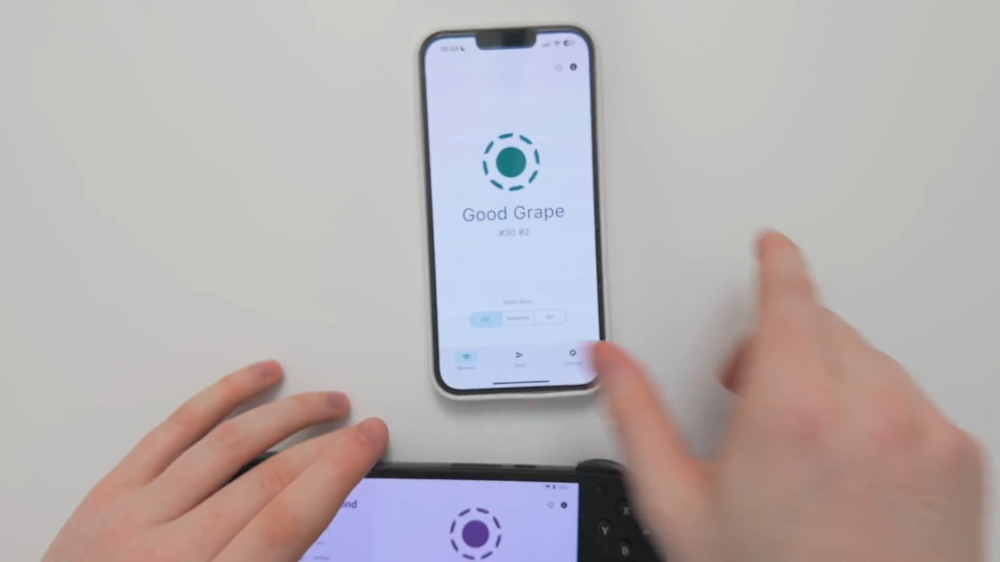
Once you're on the home screen, swipe down to confirm your SD card is recognised, then jump into the Google Play Store and sign in. If you get a "something went wrong" error while signing in, don't worry — it's very common. Give it a minute or two, check back, and you'll usually find you're signed in just fine.
Before we touch any games, there are two apps I really want you to install:
- LocalSend — install this on all your devices. It lets you send files between them over Wi-Fi with no ads. Download a game or a file on your computer, then fire it across to the Retroid Pocket 5 in seconds. Each device gets a fun random name (mine became the "powerful banana"); to send something you just hit Send, choose file (you can also send text, media, or even paste links), pick the device, and accept it on the other end. I transfer huge files this way and they fly across. Download LocalSend here.
- RAR (WinRAR) — a lot of files you download for this device come as ZIPs that need extracting. There are plenty of unzip tools on Android, but RAR is the one I've used for years and it just works. Search the Play Store for "RAR", install it, allow it access to your files, and dismiss the little donation prompt when it appears. From then on, extracting a ZIP is quick and painless.
File Manager Tips
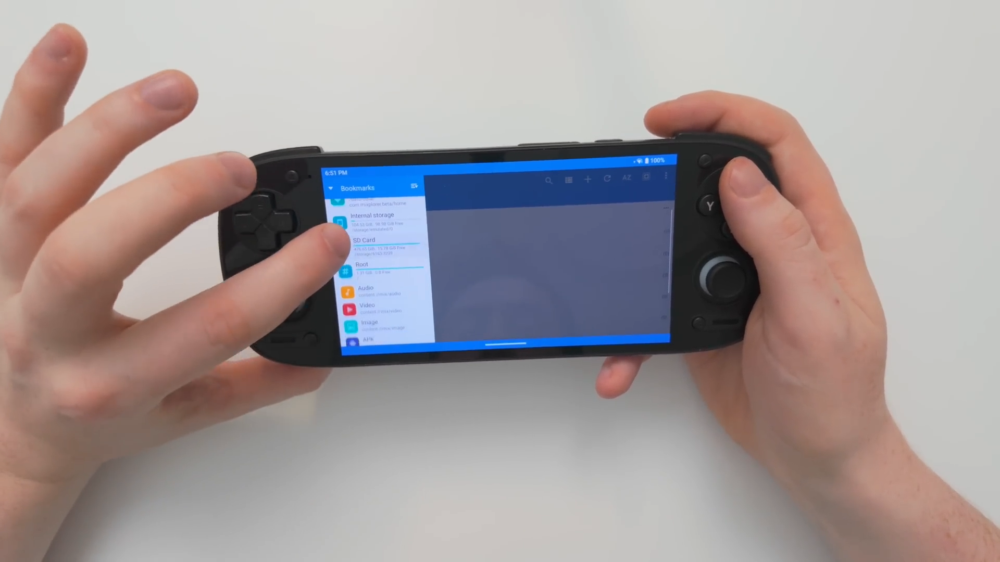
If you installed the MiXplorer file manager during setup, open it and allow it to manage your files (it needs that to do its job), then accept the privacy policy. It can unzip files too, but I've found it often fails on big ones — which is exactly why I lean on a dedicated tool like RAR for extraction.
What's great about this file manager is favourites. Tap the hamburger menu and you can rearrange your locations — I like to drag my SD card to the top, followed by internal storage. Then, for folders you open constantly (like your ROMs folder), tap the three dots and choose Pin to keep them right at the top. I pin my ROMs folder and my Downloads folder.
One more housekeeping tip: send your Chrome downloads to the SD card so you don't fill up internal storage. In Chrome, go to the three dots → Settings → Downloads → Download location, and pick the SD card. If you've got a large external card, most people should do this.
The Golden Rules for Every Emulator
Now for the fun part — emulators and games. Before we go one by one, here's the simple four-step formula we'll follow for every emulator. Once it clicks, setting up a new one takes a couple of minutes:
- Use Turnip drivers if available. They give better performance than the built-in Qualcomm driver, but they're only worth using for GameCube, Wii and Switch. (They technically work for PSP too, but PSP already runs flawlessly on the default driver, so don't bother there.)
- Scale every game to 1080p — that's the Retroid Pocket 5's native resolution, so the picture matches the screen nicely.
- If a game is too demanding, lower the resolution and add sharpening to make the picture crisp again.
- Set up the controller. In most emulators this is done for you automatically; where it isn't, you map the buttons manually (I'll show you how).
A couple of universal tricks worth knowing up front: to bring up an in-game menu or get rid of the on-screen touch controls, swipe in from the left edge of the screen toward the middle. And to hide Retroid's own FPS/info bar, swipe down from the top, swipe across once, and tap Floating icon to toggle it off.
Pointing Emulators at Your Games
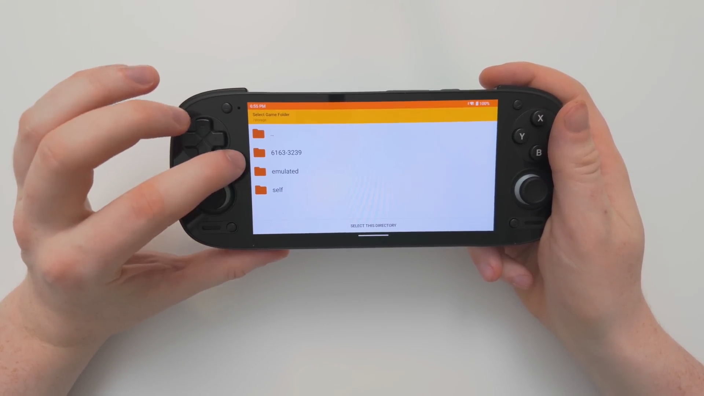
When you first open each standalone emulator, it'll ask for permission to access your files (and sometimes to accept a privacy policy — read those if you like; I've done it before so I just allow everything). Then it'll ask where your games are.
By default it shows the internal storage. If your games are on the SD card like mine, tap the three dots at the top to back out of the internal drive and pick a different drive. Your SD card usually shows up as a long string of numbers — tap that, and you'll recognise it by your own folders. Navigate into your ROMs folder, choose the right system's sub-folder, and select the directory. Your games will populate instantly. That same "find the SD card → ROMs → system folder" pattern is what you'll repeat in every emulator below.
3DS — Citra
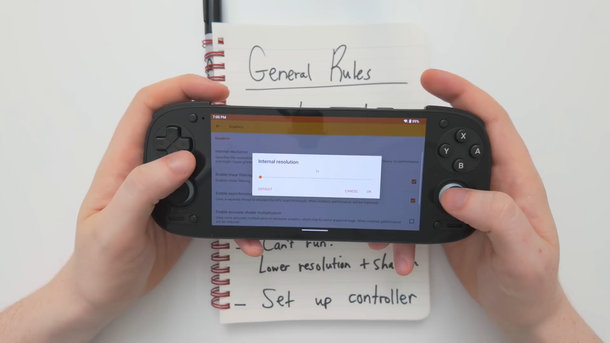
Let's use Citra (for 3DS) as our first worked example, since it needs a fully manual controller setup and shows off the whole process. Point it at your 3DS folder (mine is called n3ds) and your games appear.
Run through the golden rules. No Turnip drivers for Citra, so skip step one. For resolution, go to Graphics → Internal Resolution. Citra is one of the few emulators that doesn't list an actual resolution like 1080p — instead push it to the maximum 4×. It runs flawlessly that way; if it ever struggled you'd drop to 3× or 2×.
Now the controller. Go to Gamepad and map the buttons — match A, B, X, Y to the same letters on the handheld, set Select and Start to the little buttons either side of the screen, and map the d-pad and sticks (the left stick is usually listed first, the right stick second). Once you're in a game, swipe in from the left, choose Toggle controls, and turn off the on-screen overlay for a nice clean screen.
If the sticks won't register while mapping, go to Settings → Handheld Settings → Input → Joystick Calibration, run through every stick and trigger as the red line tells you (it'll ask you to spin the stick vigorously), then push Select to finish. After that they'll work perfectly.
PlayStation 1 — DuckStation
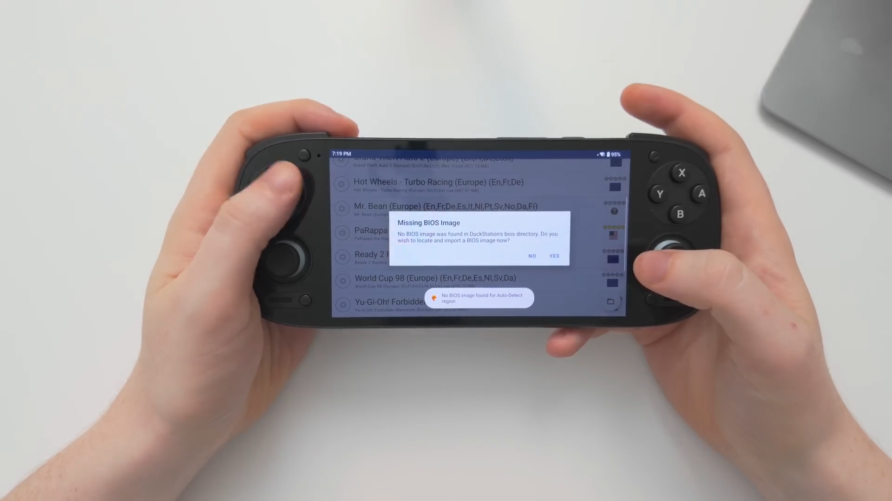
Choose Add Game Directory, point it at your PS1 folder, use that folder and allow — your games load right in. No Turnip drivers for PS1, so go straight to graphics: open the hamburger menu → App Settings → Graphics → GPU Renderer, and choose Vulkan (I use Vulkan wherever I can). Set the resolution scale to 1080p (5×).
For the controller, go back to the menu → Controller Settings → Port 1 → Perform Automatic Mapping, pick the Retroid Pocket controller, and everything maps itself.
PS1 needs a BIOS. Try to launch a game and you'll get "No BIOS image found." You'll need to find a PS1 BIOS yourself online (mine is scph7502 — there are several and they all work). Send it over with LocalSend, extract it with RAR if it's zipped, then in DuckStation point it at the BIOS file. After that, every game will boot. To clean up the screen, swipe in from the left, tap the gamepad icon → Touchscreen → Controller View → None.
PlayStation 2 — EtherSX2
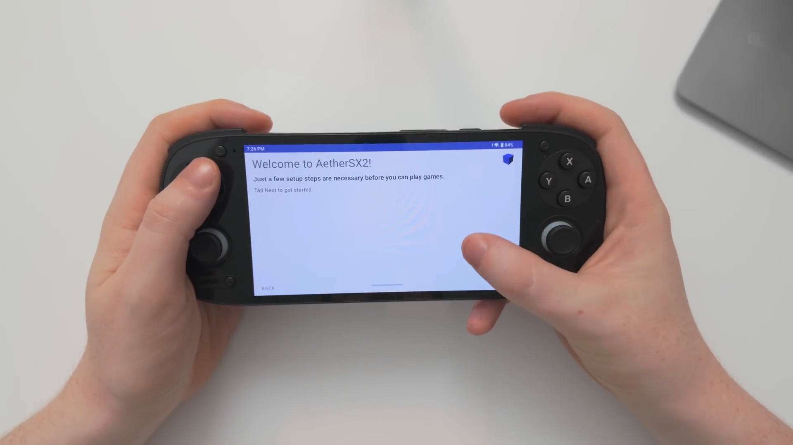
Open EtherSX2 and tap Next. It'll ask for a BIOS straight away — choose Import BIOS and bring a PS2 BIOS file over with LocalSend (extract it first to make life easier), then select it. Next, set your game directory the same way as always: the plus button → your ROMs → PS2 → use this folder → allow. Finish, and your games populate.
No Turnip drivers here. Go to the menu → App Settings → Graphics → GPU Renderer → Vulkan. PS2 is harder to run than PS1, and there's no straight "1080p" option — how high you can push the upscale multiplier is game-by-game. Start at 2× native to be safe, then nudge up to 3× if a game has the headroom. (A few light games like Auto Modellista will happily do 5×, but most won't — stick around 2–3× and find what works.) Finally, menu → Controller Settings → Port 1 → Automatic Mapping → Retroid Pocket controller, then Touchscreen → Controller View → None to hide the overlay.
GameCube & Wii — Dolphin (Turnip)
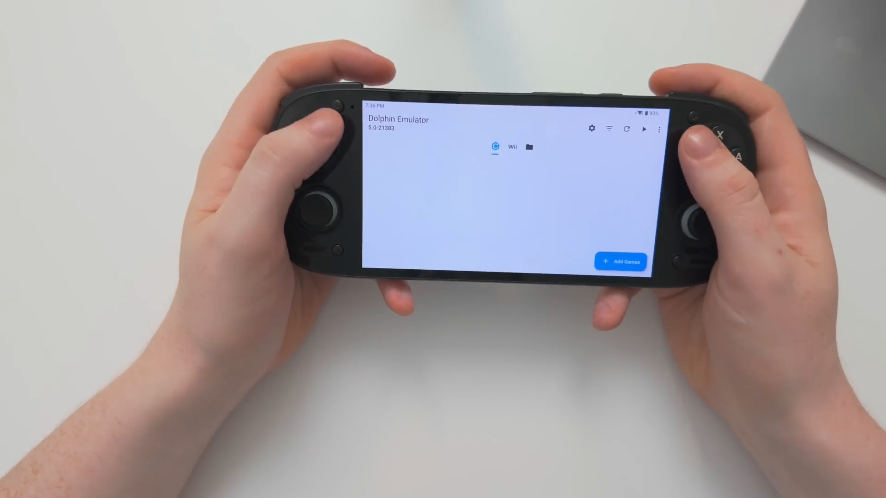
Dolphin is two emulators in one — you toggle between GameCube and Wii at the top — so there's a bit more to do. First add your games: Add Games → your GameCube (GC) folder, then switch to Wii at the top and add your Wii folder.
Now the Turnip driver. Go to the settings cog → Graphics Settings → Video Backend → Vulkan, then at the bottom under GPU Driver choose Install Driver. You'll need to download a Turnip driver first — I'll link them below, along with the version I'm liking most right now. Grab the ZIP in Chrome, then in Dolphin install it from your Downloads folder (tip: tap the view icon to switch from icon view to list view so you can read the full file names). Once it says the driver installed successfully, you're using it.
Scale up via Enhancements → Internal Resolution → 1080p. Then the controllers — and there are two of them.
Mapping the Wii Remote & Nunchuk
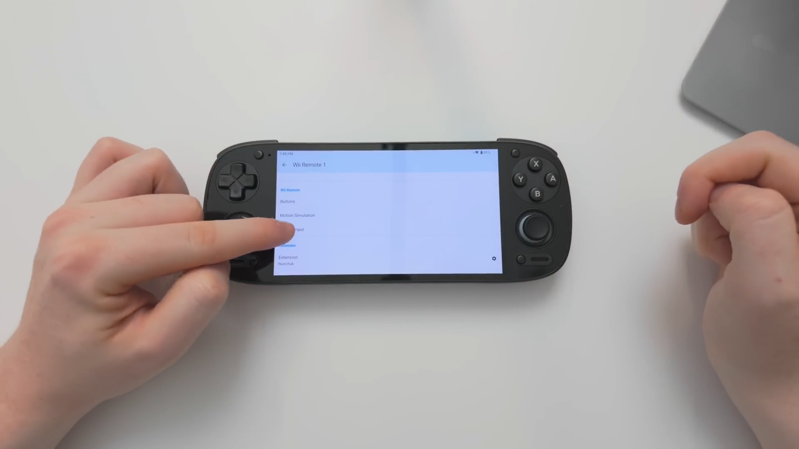
For GameCube: GameCube Input → cog next to Controller 1 → map A/B/X/Y, the control stick (left stick), the C-stick (right stick), Z to Select, the triggers to L/R, and the d-pad. Done.
The Wii controller is trickier because we're emulating a Wii Remote and a Nunchuk with motion. Pick the Retroid Pocket controller, then map the face buttons how you like (I use A→B, B→X, 1→A, 2→Y). The key parts are the motion settings:
- Point (aiming the remote) → the left analog stick, with Recenter set to the right stick click so you can snap back to the middle.
- Shake (needed in a lot of games) → put the X, Y and Z axes all on one button, like R1, so holding R1 shakes the remote in every direction.
- Motion Input is already mapped to the handheld's gyro by default; if you'd rather use a stick to aim, you can remap pitch/roll to the right stick instead. Play with it per game.
One setting people miss: go to Extension and set it to Nunchuk. Many games won't even load without it, throwing up a "please connect a Nunchuk" message. And honestly — if you're struggling, there are great community control profiles online you can import per game. Once you're set, swipe in from the left → Overlay controls → Toggle all to clear the screen.
Turn on save states! Settings → General → enable save states. Then mid-game you can swipe in from the left and choose Quick Save or Quick Load to pick up exactly where you left off — it's my favourite thing about emulation.
Nintendo Switch — Citron (Turnip)
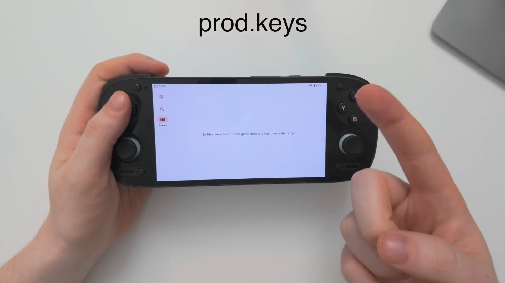
Switch emulation needs two files: a prod.keys file and a firmware file. Get the latest versions you can, and make sure they match — if you grab version 19 keys, get version 19 firmware too. I'm using version 19, which I believe is the newest at recording.
I'm showing Citron here on purpose: most other Switch emulators walk you through importing keys and firmware step-by-step, but Citron leaves you on your own — so if you can do it here, you can do it anywhere. Go to Settings → Open Citron Folder. (Handy note: the built-in file manager gives every emulator its own section in the left pane, so they're easy to find.)
- prod.keys: in the file manager, select your prod.keys file → Copy to → open the left pane → Citron → the
keysfolder. - Firmware: extract the firmware ZIP with RAR first. Open the extracted folder, select all the files (three dots → Select all — mine was 229 files), then three dots → Move to → Citron →
nand/system/Contents/placeholder. Let all the files move across.
Switch Graphics Settings
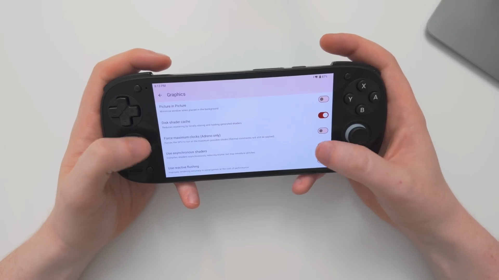
Back to the golden rules — Switch can use Turnip, so in Citron go to the GPU Driver Manager, install your Turnip driver and select it. Then add games: Manage Game Folders → + → your ROMs → Switch → use this folder → allow. Say yes to deep scan (it looks in folders inside folders, just in case you've buried a ROM), and your games populate.
Now the settings that make Switch run nicely:
- Advanced Settings → Graphics → turn on Use asynchronous shaders. This smooths things out with fewer hiccups.
- Audio → change the output engine to cubeb. This stops audio stuttering and glitches.
That's most of what you need — everything else can stay default and runs really well. To clean up the screen, swipe in from the left → Overlay options → toggle off the overlay (and the FPS counter if you want).
If one particular game struggles, close it, hold your finger on it to open its per-game settings, and drop the graphics from 1× to 0.75×. That can look a little blurry, so also change the window adapting filter from bilinear to AMD FidelityFX Super Resolution. That combo gives a sharp image that barely looks worse than 1× to my eyes, and runs much more smoothly.
Any Other Emulator
That covers the main systems, but the beauty of the formula is that everything else works the same way. For any emulator I didn't show here, you won't need Turnip drivers — just find the graphics setting and scale to 1080p (or as high as it'll go). If a game won't run, lower the resolution and add sharpening. And set up the controller — most do it automatically, and where they don't, you select the button you want and press it on the handheld. That's it.
Wrapping Up
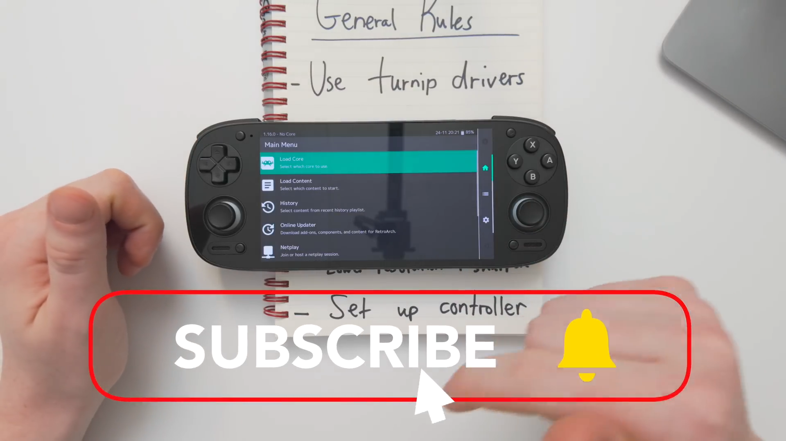
If you followed along, you should now be set up and happily playing games across the whole range — from PS1 right up to Switch. This was deliberately a simple beginner's guide to get you going. If you want to go deeper and run something like RetroArch with a front-end like EmulationStation, that's more advanced and I'll cover it in a future video.
I hope this helped. If it did, let me know in the comments, and if you haven't bought your Retroid Pocket 5 yet, the link below goes to the official Retroid store — the same place I bought mine.
The Retroid link is an affiliate link which supports me at no extra cost to you! Thank you very much if you use it ❤️